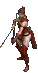
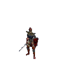

Rogues are not as effective in team games, since allies can cause damage to one another even with Player Friendly set on. For example; if a Warrior is attacking, then the Rogue has to accurately target the monster to avoid hitting the Warrior. The only saving grace a Warrior has from accidental damage is his Shield; since there is not a hard cap on Blocking, if he were to have enough Dexterity he would be able to block the most of a Rogue's arrows, if not every arrow she fires as long as he is immobile.

